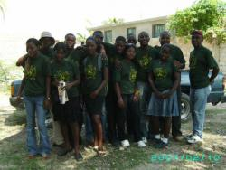

Lancer une antenne Terre des jeunes
Chaque jeune qui le désire peut s'impliquer dans Terre des jeunes et même créer une antenne locale
Des comités locaux
Le vrai "citoyen" de Terre des jeunes peut, chez lui, dans son école, son quartier, son village ou sa ville, prendre l'initiative de créer un comité en s'associant avec deux autres amis motivés pour former le bureau exécutif du comité. Ils se répartissent les fonctions de président, de secrétaire et de trésorier et le comité devient l'organe de référence local qui permet ensuite à tous les jeunes intéressés à s'impliquer dans les actions de Terre des jeunes. Toutes les cellules ont en  commun un ardent désir de protéger notre environnement et de reconnaître les jeunes comme un moteur fondamental de changement.
Chaque comité se voit confier la tâche de sensibiliser les autres jeunes, de maintenir la constance et l'esprit de Terre des jeunes, de lancer des actions concrètes concertées qui leur tiennent à coeur et de structurer la gestion des espaces que les administrations ou les propriétaires acceptent de confier à la vigilance de la jeunesse locale. Les actions de Terre des jeunes sont avant tout basées sur l'implication bénévole des membres et collaborateurs.
Chaque antenne de
Terre des jeunes est
entièrement indépendante de
l'entité
transnationale.
Terre des jeunes
Transnational offre, avant
tout, une vision et un
support moral et logistique
aux sections locales et
leur permet de s'afficher
sur le site
terredesjeunes.org. Chaque
antenne a sa page
personnalisée pour y faire
part de ses
projets, images et
films, idées,
réalisations. !
Le programme de chaque comité pourrait se résumer ainsi :
Si ce n'est déjà fait,
et dans la mesure du
possible, enregistrer
officiellement la
structure.
Contacter les autorités
locales (mairie, police,
écoles, églises) pour leur
annoncer la création d'une
antenne Terre des jeunes.
Obtenir, si
possible, un certain
nombre d'appuis logistiques
:
- mise à disposition d'un local de réunion (salle de classe, bureau, sous-sol d'église, centre communautaire, maison d'un jeune, hutte auto-construite);
- pour la création d'un parc sylva local, mise à disposition, pour une longue durée, d'un terrain suffisamment vaste pour que les jeunes y plantent leurs propres arbres;
- pour certaines activités, accès à des équipements ou des services : photocopies, téléphone, domiciliation, transports, eau.
Voici quelques idées d'action pour le comité :
- Suivre le programme officiel de la Fête de l'arbre, à petite ou à grande échelle : Graines de vie, sylvelle, Fête de l'arbre et parc sylva. (voir Fête de l'arbre)
- Organiser une corvée de nettoyage d'un bord de lac ou de rivière, d'un terrain de jeu, d'un boisé, etc.
- Organiser une activité de compostage à la maison, à l'école ou autre.
- Organiser une activité de recyclage à la maison, à l'école ou autre.
- Organiser une corvée collective : creuser un puits collectif, des latrines collectives, des rigoles, réparer ou construire un réseau de distribution d'eau, etc. Ceci peut même devenir de l'entraide entre villages voisins.
- Faire un jardin écologique. Planter un potager, un verger. Cela peut devenir un projet de jardin collectif à plus grande échelle.
- Construire un four solaire avec des matériaux simples.
- Sensibiliser les gens de notre entourage aux combustibles alternatifs au charbon de bois.
- Organiser des activités d'information sur l'environnement (démonstration de pépinière, compostage, conférences sur l'eau, le sol, l'agriculture soutenable, les changements climatiques, etc.)
- Devenir les gardiens d'une zone naturelle d'intérêt (par exemple un marécage, un boisé) en demandant sa protection aux autorités et en aménageant les lieux.
- Nettoyer un cours d'eau sali par les déchets, les sachets et les bouteilles de plastique.
- Faire de la plantation d'arbres autour d'un plan d'eau ou d'un cours d'eau pour protéger la qualité de l'eau et éviter l'érosion.
- Faire des jardins sur les toits en ville pour économiser de l'eau et du sol et garder la fraîcheur en ville. Ceci est aussi une source de sécurité alimentaire en ville. (voir: http://rooftopgardens.ca/?q=fr/internationale ou d'autres site sur l'agriculture urbaine).
- Faire une construction écologique qui servira de lieu de rencontre et lieu d'activités de Terre des jeunes.
- S'inspirer de programmes pédagogiques existants tels ce kit pédagogique de l'UNESCO sur la désertification : http://www.unccd.int/publicinfo/unescoKit/unescoKit.php
Le financement des activités
Il faut garder en tête que les activités de Terre des jeunes sont basées avant tout sur des actions bénévoles. Nous sommes tous conscients de l'importance d'agir pour protéger notre environnement. Il en va de notre survie à tous. C'est pour cela qu'il est important de se prendre en main, de s'unir et d'agir ensemble pour améliorer notre vie, notre pays, notre planète. Il ne faut pas attendre du financement pour agir, car nous risquons d'attendre très longtemps.
Il n'est pas facile de faire rouler une organisation de façon entièrement bénévole, surtout dans un contexte de précarité financière, sociale et politique. Le plus important est de motiver les bénévoles avec de petites récompenses, de la valorisation. Voici quelques idées pour motiver les participants et trouver des appuis, des fonds :
- Trouver des partenaires au sein de votre communauté. Il existe des organismes, des écoles, des médias, des compagnies, des entités politiques (ex. : mairie) et aussi des individus qui disposent de terrains, de locaux, de subventions, de matériaux, d'expertise, de visibilité ou de contacts.
- Faire parler de vous. Lorsque vous devenez une antenne Terre des jeunes, vous avez une visibilité sur le site internet de Terre des jeunes. Vous pouvez mettre des articles et des photos de vos actions. Ça vous donne de la crédibilité. Les médias locaux sont aussi importants. Contactez-les. Faites des affiches et mettez-les dans la ville.
- Faire des levées de fond : organiser un souper bénéfice, une danse, un spectacle, un lavage de voitures, un bingo, un tirage au sort d'un prix, une loto, une tombola; vendre des produits achetés ou fabriqués (artisanat, t-shirts, nourriture, aliments poussés dans le jardin, plantules).
- Trouver des commanditaires : Contactez des compagnies, des commerçants qui vous donnent de la nourriture, de l'argent, des cadeaux. En échange, affichez leurs noms et téléphones lors de vos activités, sur des t-shirts, etc.
- Faire des contacts avec des organismes influents en faisant du bénévolat pour eux ou en offrant votre expertise gratuitement. Contactez toujours les mêmes personnes.
- Demander des dons en argent ou en espèce (église, famille et amis, demandes de subvention). Les dons en espèce peuvent être, par exemple, des dons de matériaux, de livres ou d'objets, ou encore de l'aide à la préparation d'un repas de levée de fonds ou lors d'une fête de l'arbre, la participation de musiciens bénévoles.
- Prendre des cotisations de membres, même minuscules, et offrez certains privilèges aux membres (t-shirt, carte de membre, fête des membres, invitations spéciales, participation aux réunions, etc.).
- Inviter des stagiaires (généralement de jeunes diplômés qui veulent obtenir de l'expérience). Cela implique du logement et la prise en charge des stagiaires.
- Organiser des activités amusantes entourant vos activités (musique, tirage au sort d'un prix, pot luck ou kombit (tout le monde partage de la nourriture).
- Être patient, montrer l'exemple, être constant et on vous remarquera. Les premières années peuvent être difficiles mais après un certain temps, vous aurez fait vos preuves avec votre bon travail. Voyez le cheminement des autres antennes, vous verrez.
- Gardez contact avec les autres antennes de Terre des jeunes à travers le monde. Partagez vos expériences.
- Terre des jeunes transnational peut financer certaines activités de façon limitée. Ce sont généralement de petits montants (200$ à 1000$) qui sont reçus des membres bénévoles de Terre des jeunes Transnational. Ils donnent certains montants de leurs poches en signe de solidarité.
- Nous croyons fermement que l'action bénévole et solidaire est le meilleur moyen de faire avancer les choses, de tisser de véritables liens dans la communauté. Cependant, nous tenons à fournir tous les outils possibles aux antennes de Terre des jeunes pour qu'elles puissent voler de leurs propres ailes. Donc, voici certains liens vers des organismes de financement en environnement. Les demandes doivent être faites très soigneusement car cela pourrait affecter la capacité des autres antennes à faire des demandes. Vous pouvez nous envoyer votre demande avant de la soumettre pour recevoir des suggestions/corrections. Il faut des projets très concrets, bien décrits avec un budget et un échéancier clairs. Ces demandes peuvent demander beaucoup de temps et d'énergie et être très restrictives dans leurs exigences. La plupart des organismes ne font que du co-financement, il faut donc trouver d'autres partenaires si possible. Cependant, l'action bénévole est généralement considérée comme une contribution en nature. Voici donc des idées (NB : nous ne faisons pas affaire avec ces organismes, étant nous-même des bénévoles, ce ne sont que des suggestions. Vous êtes donc responsables des demandes et de faire vos propres recherches)
- Le Programme de
Petites Initiatives du
Fonds Français pour
l’Environnement Mondial a
pour objectif de soutenir
les organisations de la
société civile des pays
africains, actives dans
la protection de la
biodiversité et la lutte
contre les changements
climatiques.
http://www.uicn.fr/Un-nouvel-appel-a-projets-du.html - Interamerican Foundation (en anglais) : http://www.iaf.gov/grants/apply_grant_en.asp
- Fondation Prince Albert II de Monaco : http://www.fondationprincealbertiidemonaco.net/fondation.asp?page=deposez_vos_projets
- Fonds d'ambassades : Les pays du Nord représentés dans un pays du Sud possèdent en général des "fonds d’ambassade", de montants limités mais gérés sur place par les ambassadeurs ou leurs experts en coopération technique. Les ambassades gèrent aussi les demandes de coopérants. http://base.d-p-h.info/fr/fiches/premierdph/fiche-premierdph-1652.html
- UICN : Union internationale pour la conservation de la nature est présente dans plusieurs pays. http://www.iucn.org/fr/ou/
- CECI : http://www.ceci.ca/ceci/fr/que_faisons_nous_/solidarite_canada_haiti/FicheAssistHumanitaire.pdf
- OXFAM : ils sont présents dans plusieurs pays. Vous pouvez faire certains partenariats avec eux.
- Fonds pour
l'environnement mondial
(FEM) en anglais Global
Environment Facility : Le
mécanisme officiel pour
le financement des
interventions pour la
protection de
l'environnement est le
Fonds pour
l'Environnement Mondial.
Beaucoup de gros
organismes sont financés
là. <http://www.gefweb.org/>
http://web.univ-pau.fr/~scholle/ecosystemes/5-gef/5-pg-fr.htm
- AUSSI -> Un guide
pour faire des demandes
de subvention :
http://www.unesco.org/csi/pub/info/seacam10.htm
Pour la procédure exacte
voir
cette page.
Pour la structure
organisationnelle voir
cette
page